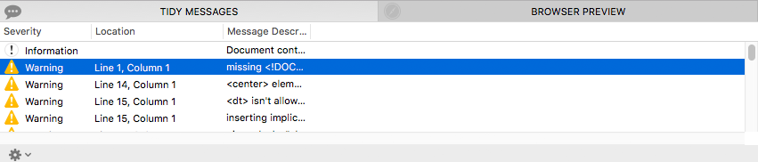

The Tidy Messages Table
The Tidy Messages table is your best resource for understanding the actions that Balthisar Tidy performed on your document. As shown below, it consists of one or more rows of information, divided into multiple columns of data. As a standard Mac OS X table, the columns can be sorted, repositioned, and re-sized.

- Severity
- The severity indicates the general type of condition that
Balthisar Tidy encountered, and can be one of the following types.
- Information presents general information.
- Warning indicates that something isn’t an error, but most likely a serious problem anyway.
- Configuration indicates a configuration problem, and should be very rare in Balthisar Tidy.
- Access messages are given when accessibility issues are discovered.
- Error messages indicate that the source violates a specification or uses unsupported features.
- Document indicates that the issue is related to something in the document structure.
- PANIC! indicates the Tidy had an internal error, and you should file a bug report if encountered.
- Location
- The location, if present, indicates the row and column position in the Source HTML of the cause of the message. Selecting a row in the table will move the Source HTML editor to this location automatically, and highlight the location for you.
- Message Description
- The description describes the condition that was found. This important information is key to understanding what changes Tidy made. Depending on your reasons for using Balthisar Tidy you may choose to ignore the message, or you might take steps to fix the issue in the Source HTML.